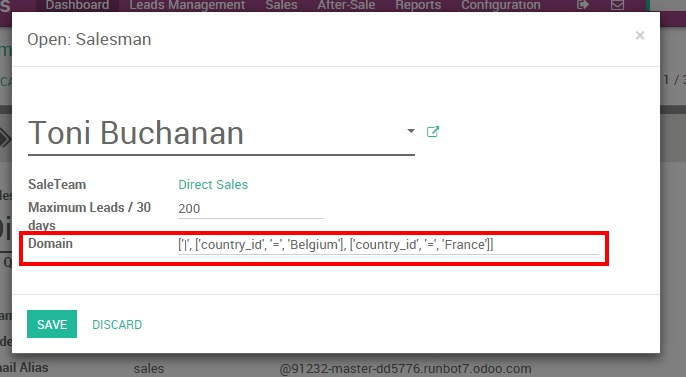

根据您的业务流程和需求，您可能需要分派您的进来的线索到不同的销售团队，甚至具体的销售人员。这里有几个例子：
你的公司有位于不同地区的办公室。你需要基于地区分配线索。
您的一个销售团队，致力于大型企业到的机会而另一个是专门为中小型企业。您将要根据公司的大小分配线索;
您的一个销售代表的是讲外语，而团队的其他成员只能讲母语。因此，你会想分配给那个人所有来自非母语国家的线索。
你可以想像，手动分配新的线索给特定个人可能是乏味且耗时的 - 尤其是如果你的公司每天产生引线的高容量。幸运的是，YuanCloud CRM可以让你根据特定要求自动分配线索，比如地点，兴趣，公司规模等，在具体工作流程和精确的规则的过程中，您将能够自动重新分配所有的机会给正确的销售团队和/或推销员。
配置
如果你刚刚开始YuanCloud CRM而且没有设置您的销售团队，也没有注册您的销售人员，：DOC：[UNKNOWN NODE title_reference]。
注解
你必须安装模块**线索评分**。转到：菜单选择：[UNKNOWN NODE title_reference]，如果不是这种情况已经安装。
为一个销售团队定义一个规则
从销售模块，进入你的仪表板和在期望的销售团队上点击**更多**按钮，然后在**设定**。如果你没有任何的销售团队呢，：DOC：'你需要先创建一个<../../销售团队/设置/制作团队>`。

在您的销售团队菜单，[UNKNOWN NODE problematic]域**字段使用特定的域规则(关于域的技术细节，参考构建模块教程<https://www.yuancloud.com/documentation/9.0/howtos/backend.html#domains>`__或`语法参考指南<https://www.yuancloud.com/documentation/9.0/reference/orm.html#reference-orm-domains>`__)，将只允许线索匹配团队域。
例如，如果你希望你的*直接销售团队*只接收从美国和加拿大来的线索，你的域将如下：
[[country_id, 'in', ['United States', 'Canada']]]

注解
您还可以基于您的线索评分进行自动分配。例如，我们可以想像，你希望所有100下得分的线索分配给普通的销售团队和超过100导致了更有经验的销售团队。了解更多关于：DOC：'这里怎么得分线索<线索得分>`。
为销售员定义规则
你可以一步完成你的分配规则，决定一个销售团队内部线索分配给特定的销售人员。例如，如果我希望托尼·布坎南从*直接销售*只接受来自加拿大的线索，我可以创建一个规则将自动分配他从该国来的线索的规则。
依然从销售团队菜单(见本文上面)，分配子菜单下点击您所选择的销售人员。然后，在*域*字段中输入您的规则。
注解
在YuanCloud，线索总是先被分配到一个销售团队再分配给销售人员。因此，你需要确保你的销售人员的分配规则是销售团队的分配规则的子类。